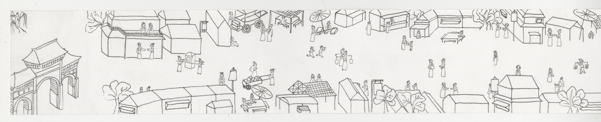
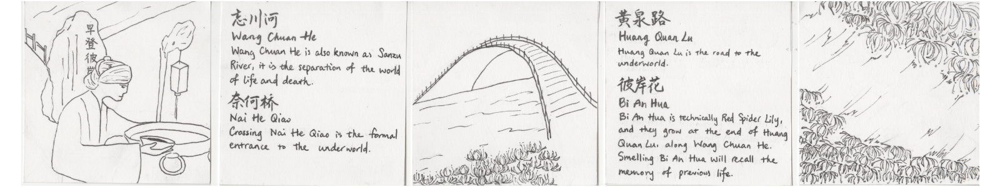
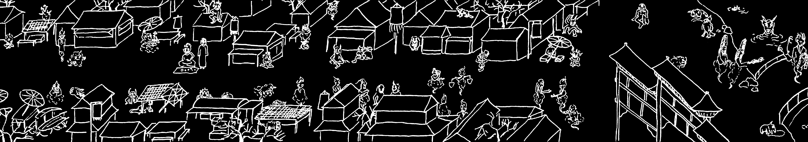

◈Watch on Google Drive
This zine is completely hand bound, in this traditional Chinese binding method Long Lin Zhuang (龙鳞装). However, in the traditional style, it should be a roll, but my paper are not thin enough for the roll to work, so I improved it into this accordion fold.
All the images are hand drawn and scanned, then photoshopped to plain black and white.
This zine is about the Chinese legend of the way to the underworld after a person dies. So it start with the imagery of the alive's world, and after flipping though the way to the underworld, it form a image of the underworld.
This zine won an Award of Excellence at MoCCA 2023.
Some scans of the original
 Some photoshopped images
